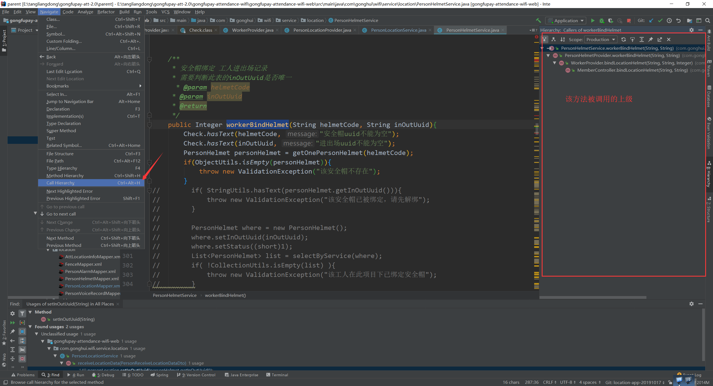
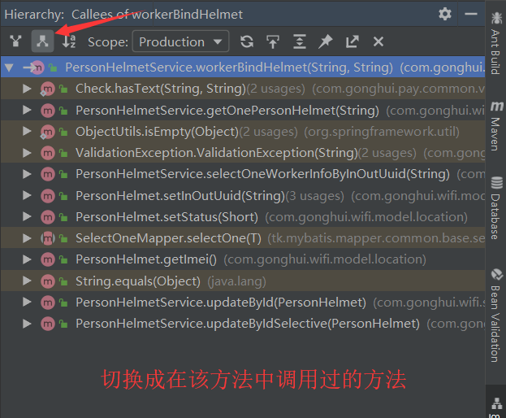
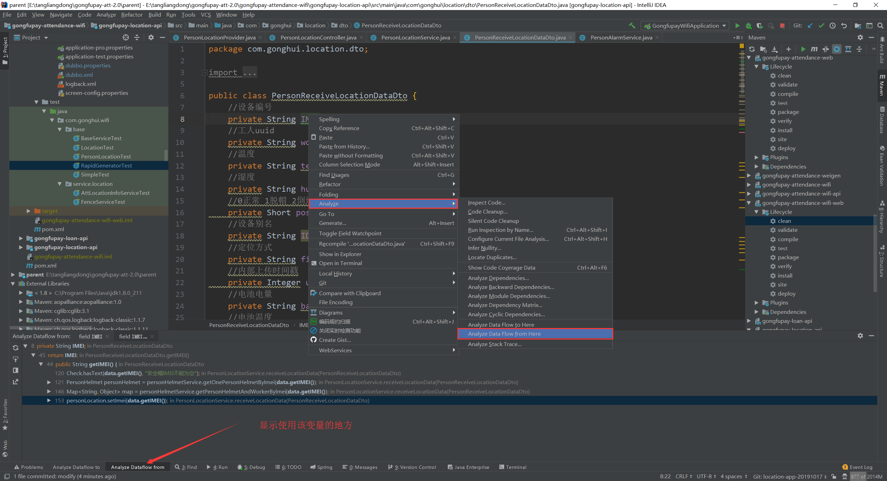
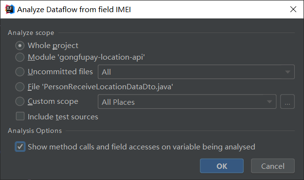
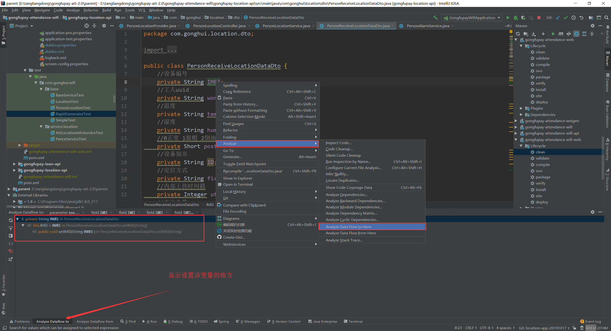
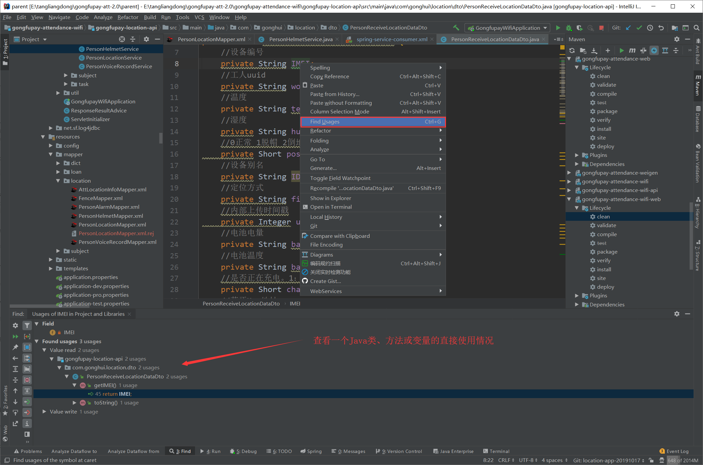
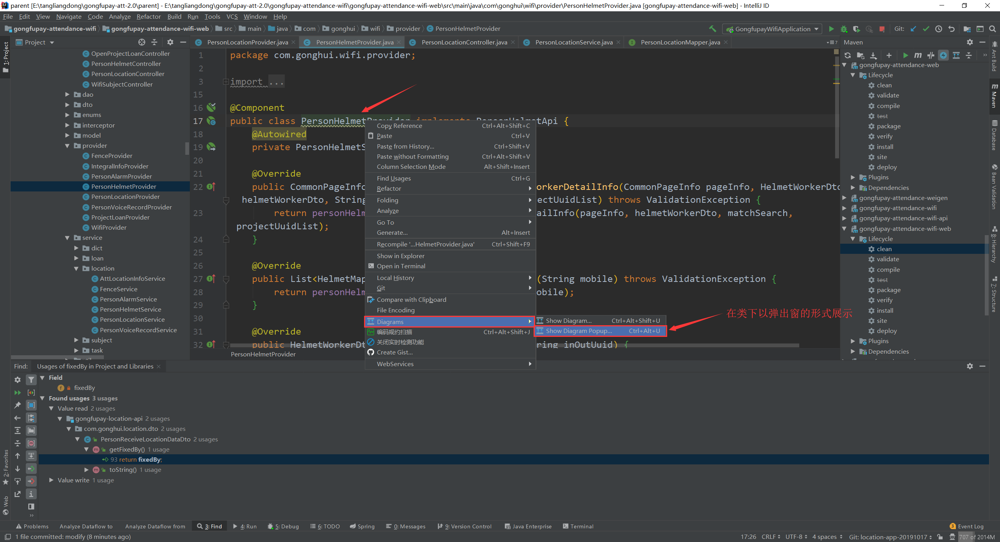
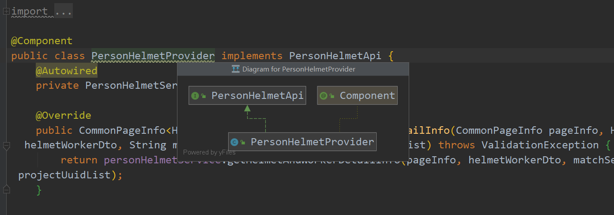

查看Java方法的调用树
IntelliJ IDEA中可以在主菜单中选择Navigate | Call Hierarchy命令查看一个Java方法调用树（caller和callee两个方向）


上图中左上角的两个按钮是调用和被调用关系的显示。
查看表达式、变量和方法参数的传递关系树
IntelliJ IDEA中可以在主菜单中选择 Analyze | Data flow from / to Here 两个命令查看表达式、变量和方法参数的传递关系树。
Analyze | Data Flow from Here


Analyze | Data Flow to Here

查询调用目标方法的地方可以用 Analyze Data flow from Here
查看Java类、方法或变量的直接使用情况
IntelliJ IDEA的 Find Usage 可以查看一个Java类、方法或变量的直接使用情况。
或者直接点击目标对象，使用键盘快捷键：Ctrl+G

查看类关系图
在包或类上右键点击Diagram或者用快捷键Ctrl+Alt+U。

